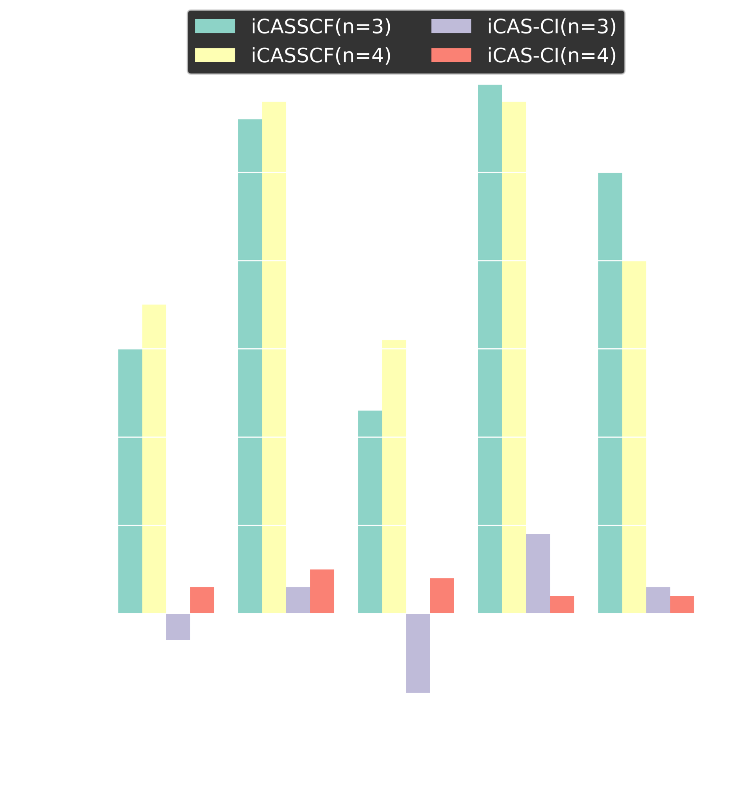
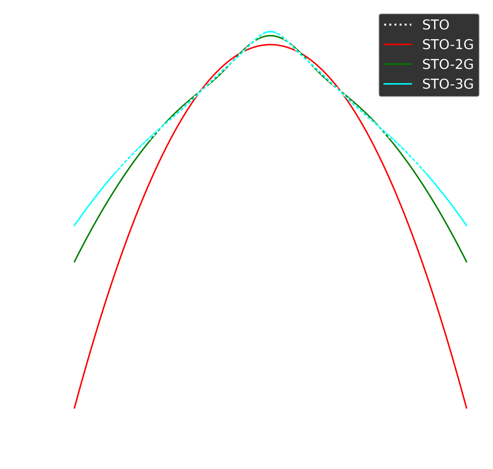

Computational and Theoretical Advances in Accurately Modeling Molecular Wave Functions
Duy-Khoi Dang
Zimmerman Group
A Primer on Quantum Mechanics
- First postulate: A system is completely specified by its wave function, $\psi$
- Second postulate: A classical observable, $O$, may be obtained by applying Hermitian operator, $\hat{O}$, to the wave function
- $$\hat{O}\vert \psi \rangle = O \vert \psi \rangle$$
The Schrödinger Equation
\[\begin{equation*} \hat{H} \vert \psi \rangle = E \vert \psi \rangle \end{equation*}\]
The Hamiltonian
\[\begin{gather*} \fragment{1}{\hat{H}} \fragment{2}{= \color{lime}{\underbrace{\vphantom{\boxed{\sum_{i>j}}}\color{lime}{-\frac{1}{2} \sum_i \nabla_i^2}}_{\text{e$^-$ KE}}}} \fragment{3}{ \color{cyan}{\underbrace{\vphantom{\boxed{\sum_{i>j}}}\color{cyan}{-\frac{1}{2} \sum_I \nabla_I^2}}_{\text{nuc KE}}}} \fragment{4}{ \color{violet}{\underbrace{\vphantom{\boxed{\sum_{i>j}}}\color{violet}{+ \sum_{i>j} \frac{1}{\vert r_i - r_j \vert} }}_{\text{e$^-$-e$^-$ repulsion}}}} \fragment{5}{ \color{orange}{\underbrace{\vphantom{\boxed{\sum_{i>j}}}\color{orange}{+ \sum_{I>J} \frac{Z_I Z_J}{\vert R_I - R_J \vert} }}_{\text{nuc-nuc repulsion}}}} \fragment{6}{ \color{yellow}{\underbrace{\vphantom{\boxed{\sum_{i>j}}}\color{yellow}{- \sum_I \sum_i \frac{Z_I}{\vert r_i - R_I \vert}}}_{\text{nuc-e$^-$ attraction}}}} \end{gather*}\]
The Hamiltonian
\[\begin{gather*} \hat{H} = \color{lime}{\underbrace{\vphantom{\boxed{\sum_{i>j}}}\color{lime}{-\frac{1}{2} \sum_i \nabla_i^2}}_{\text{e$^-$ KE}}} \color{cyan}{\underbrace{\vphantom{\boxed{\sum_{i>j}}}\boxed{\color{cyan}{-\frac{1}{2} \sum_I \nabla_I^2}}}_{\text{nuc KE}}} \color{violet}{\underbrace{\vphantom{\boxed{\sum_{i>j}}}\color{violet}{+ \sum_{i>j} \frac{1}{\vert r_i - r_j \vert} }}_{\text{e$^-$-e$^-$ repulsion}}} \color{orange}{\underbrace{\vphantom{\boxed{\sum_{i>j}}}\boxed{\color{orange}{+ \sum_{I>J} \frac{Z_I Z_J}{\vert R_I - R_J \vert} }}}_{\text{nuc-nuc repulsion}}} \color{yellow}{\underbrace{\vphantom{\boxed{\sum_{i>j}}}\color{yellow}{- \sum_I \sum_i \frac{Z_I}{\vert r_i - R_I \vert}}}_{\text{nuc-e$^-$ attraction}}} \end{gather*}\]
The Electronic Hamiltonian
\[\begin{equation*} \hat{H} = \color{lime}{\underbrace{\vphantom{\boxed{\sum_{i>j}}}\color{lime}{-\frac{1}{2} \sum_i \nabla_i^2}}_{\text{e$^-$ KE}}} \color{violet}{\underbrace{\vphantom{\boxed{\sum_{i>j}}}\color{violet}{+ \sum_{i>j} \frac{1}{\vert r_i - r_j \vert} }}_{\text{e$^-$-e$^-$ repulsion}}} \color{yellow}{\underbrace{\vphantom{\boxed{\sum_{i>j}}}\color{yellow}{- \sum_I \sum_i \frac{Z_I}{\vert r_i - R_I \vert}}}_{\text{nuc-e$^-$ attraction}}} \end{equation*}\]
$$\hat{H} \vert \psi \rangle = E \vert \psi \rangle$$ Only solvable for H-atom
The Variational Principle
\[\begin{equation*} \langle \psi \vert \hat{H} \vert \psi \rangle \geq E_0 \end{equation*}\]
Guess Wave function $\implies$ Optimize
Basis Selection
- Project $\psi$ onto basis
- Atom-centered, 1-electron basis
- Hydrogen-like atomic wave functions : atomic orbitals
- Take linear combination of atomic orbitals (LCAO) to form molecular orbitals (MO)


LCAO-MO
Functional form of the Wave Function
Naive approach \[\begin{gather*} \fragment{2}{\psi=\phi_1(\mathbf{r}_1)\phi_2(\mathbf{r}_2)\cdots\phi_N(\mathbf{r}_N)} \fragment{3}{\impliedby \text{No exchange}} \\\\ \fragment{4}{\psi = \frac{1}{\sqrt{N!}} \begin{vmatrix} \phi_1(\mathbf{r}_1) & \phi_2 (\mathbf{r}_1) & \cdots & \phi_N(\mathbf{r}_1) \\ \phi_1(\mathbf{r}_2) & \phi_2 (\mathbf{r}_2) & \cdots & \phi_N(\mathbf{r}_2) \\ \vdots & \vdots & \ddots & \vdots \\ \phi_1(\mathbf{r}_N) & \phi_2 (\mathbf{r}_N) & \cdots & \phi_N(\mathbf{r}_N) \end{vmatrix} } \fragment{5}{\impliedby \text{has exchange}}\\\\ \fragment{6}{\implies\text{Optimize orbitals}} \end{gather*}\]
Electron Correlation
- HF (single determinant) only qualitatively correct (sometimes)
- Missing electron correlation
Configuration Interaction
\[\begin{gather*} \fragment{4}{\hat{H}\psi = E \psi} \fragment{5}{\implies \mathbf{H}\mathbf{C} = E\mathbf{C}} \\ \fragment{6}{ H_{ij} = \langle \phi_i \vert \hat{H} \vert \phi_j \rangle} \end{gather*}\]
Full CI Scaling

- 1.6 EFLOPS $\implies 1.6 \times 10^{18}$ FLOPS
- At C$_4$H$_6$ need >$3$ yrs for single row of $\mathbf{HC}$ matrix-vector multiplication
Non-exact correlated methods
- CISD (only include single and double excitations) scales $O(N^6)$
- CCSD scales $O(N^6)$
- CCSD(T) scales $O(N^7)$: considered "Gold Standard"
Complete Active Space
\[\begin{gather*} {\hat{H}\psi = E \psi} {\implies \mathbf{H}\mathbf{C} = E\mathbf{C}} \\ { H_{ij} = \langle \phi_i \vert \hat{H} \vert \phi_j \rangle} \end{gather*}\]
Restricted Active Space
An Open-Shell Coronoid
An Open-Shell Coronoid
An Open-Shell Coronoid

Coronoid Computational Methods
- Optimize structures with CASSCF(6e,6o)/cc-pVDZ
- Compute spin states with RAS(6,6)-SF/cc-pVDZ
Coronoid Energies
Polyradicaloid indices

Odd electron density
Diagonalizing the Spin Hamiltonian
Diagonalizing the Spin Hamiltonian
| Geometry | $J_1$ | $J_2$ | $J_3$ | $J_4$ | $\varepsilon_1$ | $\varepsilon_2$ | $\varepsilon_{3a}$ | $\varepsilon_{3b}$ | $\varepsilon_{4}$ | RMSE |
|---|---|---|---|---|---|---|---|---|---|---|
| Singlet ($D_{3h}$) | -0.0382 | -0.0302 | -0.0008 | -0.0097 | 0 | 0 | 0 | 0 | 0 | $1.70\times10^{-7}$ |
| Triplet ($C_{2v}$) | -0.0322 | -0.0262 | -0.0011 | -0.0081 | 0.0101 | -0.0097 | -0.0007 | 0.0003 | 0.0042 | $6.31\times10^{-9}$ |
| Quintet ($C_{2v}$) | -0.0295 | -0.0240 | -0.0012 | -0.0073 | -0.0053 | -0.0095 | 0.0004 | 0.0004 | -0.0017 | $1.03\times10^{-9}$ |
| Septet ($D_{3h}$) | -0.0277 | -0.0233 | -0.0012 | -0.0073 | 0 | 0 | 0 | 0 | 0 | $5.25\times10^{-7}$ |
CI revisited
- CI Hamiltonian elements are mostly zero
- $$ \fragment{1}{\hat{H}} \fragment{2}{= \color{cyan}{-\frac{1}{2} \sum_i \nabla_i^2} \color{cyan}{- \sum_I \sum_i \frac{Z_I}{\vert r_i - R_I \vert}}} \fragment{3}{\color{yellow}{+ \sum_{i>j} \frac{1}{\vert r_i - r_j \vert}}} $$

Heat-bath CI
- First: get a variational wave function
- Select important determinants
Heat-bath CI
- Second step: do perturbation theory
- Recover remaining electron correlation
$$ \Delta E^{(2)} \approx \sum_k \frac{(\sum_i^{\vert H_{ki}c_i \vert>\varepsilon_2} H_{ki}c_i)^2} {E^{(0)} - H_{kk}} $$
HCI implementation details
- Encode Slater determinants: 1-hot encode $\alpha$ and $\beta$ electrons
- Store $\alpha$ and $\beta$ strings in
std::bitset

D.-K. Dang, J.A. Kammeraad, P.M. Zimmerman J. Phys. Chem. A 2023, 127,
Parallelization of HCI
- Hash $\alpha$ and $\beta$ strings:
std::bitset$\implies$int-type
HCI Performance
- Butadiene (C$_4$H$_6$) in cc-pVDZ
- (22e,82o) - ~$10^{26}$ FCI determinants
- $3.2 \times 10^6$ variational determinants
- $2.7 \times 10^{10}$ perturbative determinants
Cyclobutadiene Automerization with HCI
- C$_4$H$_4$ with cc-pVTZ
- (20e,172o) - ~$2\times10^{31}$ FCI determinants
[$\text{FeO}(\text{NH}_3)_5$]$^{2+}$
- Fe, O: cc-pVTZ, N: cc-pVDZ, H: 6-31G
- (82e,198o) all electron active space - $3 \times 10^{85}$ FCI determinants
- Truncate to (22e,168o) - $3\times 10^{33}$ FCI determinants
[$\text{FeO}(\text{NH}_3)_5$]$^{2+}$
[$\text{FeO}(\text{NH}_3)_5$]$^{2+}$
- Most expensive calculation: less than 12h on 36 nodes ($2.4 \times 10^{7}$ variational and $8.9 \times 10^{10}$ perturbative dets)
- Quintet lower than triplet by ~6 kcal mol$^{-1}$
Limitations of HCI
- HCI reduces FCI spaces to more manageable problem sizes
- Implementation of HCI achieves >75% parallel efficiency on 32 nodes (4096 cores)
- Less than 12h for (22e,168o) active space ($2.4 \times 10^{7}$ variational and $8.9 \times 10^{10}$ perturbative dets)
- HCI still has exponential growth
- Quickly hit limits of modern computing
Strategies For Big CI
- Many-body expansion $$E = E_{ref} + \sum_{i} \varepsilon_i + \sum_{i>j} \varepsilon_{ij} + \sum_{i>j>k} \varepsilon_{ijk} + \cdots$$
- Chemically intuitive definition of "bodies"
The many-body expansion for CAS
 

D.-K. Dang, P.M. Zimmerman J. Chem. Phys. 2021, 014105
$\text{i}$CASSCF
- $F_{pq}$ looks like single excitation from $p \rightarrow q$
- Numerical trick: remove redundant single excitations
$\text{i}$CASSCF Energy Benchmarks
$\text{i}$CASSCF Geometry Benchmarks
$\text{oxoMn(salen)Cl}$
- (84e,84o)
- $2.5 \times 10^{48}$ FCI determinants
| Calculation | $\Delta E_{3-1}$ (kcal mol$^{-1}$) |
|---|---|
| iCASSCF (n=3) | -0.7 |
| iCASSCF (n=4) | -0.6 |
| iCAS-CI (n=3) | 5.1 |
| iCAS-CI (n=4) | 5.5 |
Basis Selection Revisted
Gaussian Orbitals
$S(\zeta,n,l,m,r,\theta,\phi) = N^{\text{STO}}r^{n-1}e^{-\zeta r}Z_{lm}(\theta,\phi)$
$G(\alpha,n,l,m,r,\theta,\phi) = N^{\text{GTO}}e^{-\alpha r^2}S_{lm}(r,\theta,\phi)$
Molecular Integrals
\[\begin{equation*} \hat{H} = \color{lime}{\underbrace{\vphantom{\boxed{\sum_{i>j}}}\color{lime}{-\frac{1}{2} \sum_i \nabla_i^2}}_{\text{e$^-$ KE}}} \color{violet}{\underbrace{\vphantom{\boxed{\sum_{i>j}}}\color{violet}{+ \sum_{i>j} \frac{1}{\vert r_i - r_j \vert} }}_{\text{e$^-$-e$^-$ repulsion}}} \color{yellow}{\underbrace{\vphantom{\boxed{\sum_{i>j}}}\color{yellow}{- \sum_I \sum_i \frac{Z_I}{\vert r_i - R_I \vert}}}_{\text{nuc-e$^-$ attraction}}} \end{equation*}\]
Integrals needed:
- $\color{lime}{\int \chi_p (r) \frac{1}{2} \nabla^2 \chi_q (r) dr = (p\vert \frac{1}{2} \nabla^2 \vert q)}$
- $\color{violet}{\int \int \chi_p (r_1) \chi_q (r_1) \frac{1}{\vert r_1 - r_2 \vert} \chi_r (r_2) \chi_s (r_2) dr_1 dr_2 = (p q \vert r s)}$
- $\color{yellow}{\int \chi_p (r) \frac{Z_I}{\vert R_I - r \vert} \chi_q (r) dr = (p \vert \frac{Z_I}{\vert R_I - r \vert} \vert q)}$
- $\int \chi_p(r) \chi_q(r) dr = (p \vert q)$
Resolution of the Identity Approximation
- Condenses 4-center integrals to 2- and 3-center integrals
- Utilizes an auxiliary basis to fit the density
\[\begin{gather*} \fragment{1}{(\color{yellow}{\mu \nu} \vert \color{yellow}{\lambda \kappa}) \approx \sum_{\color{violet}{PQ}} (\color{yellow}{\mu \nu} \vert \color{violet}{P}) (\color{violet}{PQ})_{\color{violet}{PQ}}^{-1} (\color{violet}{Q} \vert \color{yellow}{\lambda \kappa})} \fragment{2}{= \sum_{\color{violet}{Q}} B_{\color{yellow}{\mu\nu}}^\color{violet}{Q} B_{\color{yellow}{\lambda \kappa}}^\color{violet}{Q}} \\ \fragment{3}{B_{\color{yellow}{\mu\nu}}^\color{violet}{Q} = \sum_\color{violet}{P} (\color{yellow}{\mu \nu} \vert \color{violet}{P}) (\color{violet}{PQ})_{\color{violet}{PQ}}^{-1/2}} \\ \fragment{4}{(\color{violet}{PQ})_{\color{violet}{PQ}} = \int \int \chi_\color{violet}{P}(r_1) \frac{1}{\vert r_1 - r_2 \vert} \chi_\color{violet}{Q}(r_2) dr_1 dr_2} \end{gather*}\]
6D integration to 3D integration
- Use a central potential for a Slater orbital $$ S(\zeta,n,l,m,r,\theta,\phi) = N^{\text{STO}}r^{n-1}e^{-\zeta r}Z_{lm}(\theta,\phi) $$
\[\begin{gather*} \fragment{1}{\int \int \chi_P(r_1) \frac{1}{\vert r_1 - r_2 \vert} \chi_\mu (r_2) \chi_\nu (r_2) dr_1 dr_2 = \int \color{yellow}{V_C^P} (r) \chi_\mu (r) \chi_\nu (r) d r} \\ \fragment{2}{\color{yellow}{V_C^P} (\zeta,n,l,m,r,\theta,\phi) = \frac{4 \pi (2 \zeta)^{n+(1/2)}}{\sqrt{(2n)!}(2l+1)}Z_{lm}(\theta,\phi)\color{lime}{I_{nl}}(r)} \\ \fragment{3}{\color{lime}{I_{nl}}(r) = r^{-l-1} \int_0^r (r^\prime)^{n+l+1} e^{-\zeta r^\prime} d r^\prime + r^l \int_r^\infty (r^\prime)^{n-l} e^{-\zeta r^\prime} d r^\prime} \end{gather*}\]
Integrating Slater Orbitals on a grid
- Lebedev angular grid
- Log radial grid
- Voronoi polyhedra partitioning and weighting
\[\begin{equation*} (\mu\nu \vert P) = N_{V_C^P,64}^{\text{STO}} N_{\chi_\mu,64}^{\text{STO}} N_{\chi_\nu,64}^{\text{STO}} \sum_i \bar{V}_C^P (x_i)_{32} \bar{\chi}_\mu(x_i)_{32} \bar{\chi}_\nu(x_i)_{32} w(x_i)_{32} \end{equation*}\]
D.-K. Dang, L.W. Wilson, P.M. Zimmerman J. Comput. Chem. A 2022 43, 1680
GPU Performance
Multi-GPU efficiency
Cyclobutadiene automerization in STO basis
STO Gradients

Summary
- With CASSCF and RAS-SF, handle problems where electron correlation is localized to a small number of electrons (12 for routine use)
- Using HCI can reduce the computational burden, and extrapolate to FCI
- With computational advances and parallelization, can treat 22 electrons with FCI-level accuracy
- Using the many-body expansion, get to 84 electrons
- With RI and GPUs, can utilize the more accurate STO basis
Acknowledgments
- Paul Zimmerman
- Eitan Geva
- Robert Krasny
- Roseanne Sension
Zimmerman Group
- Electronic Structure
Subgroup - Leighton Wilson
- Josh Kammeraad
Gavini Group
- Bikash Kanungo
- Ian Lin
- Sambit Das
External Collaborators
- Marcin Stepien
- Slava Bryantsev
- David Braun
Funding
- NSF GRFP
- MICDE
- DOE
- UM Chemistry
- UM Rackham
Computational
Resources
- XSEDE, SDSC
(Expanse) - DOE, NERSC
(Perlmutter)